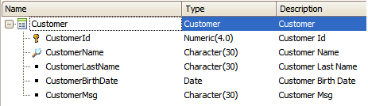
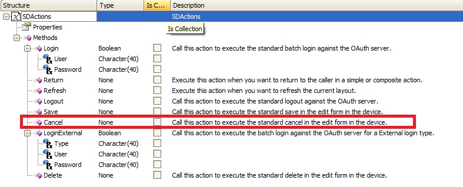
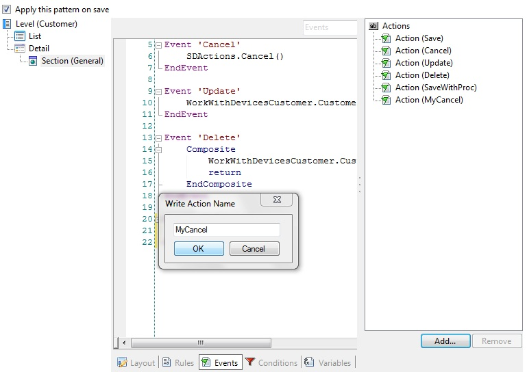
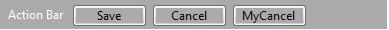
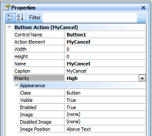
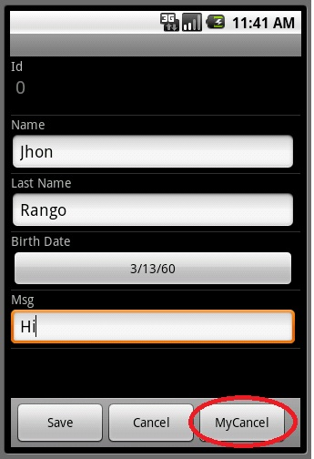

Many times when you are creating a register of a Transaction object, you need to check some restrictions before saving it. Call another Transaction, call a Panel object, a Procedure object, return to the List node, etc. So using the cancel action allows you to add more behavior to your application, when complex constraints determine whether a record should be saved or not.
The Cancel method can also be used on any Smart Device Object. The behavior outside the insertion of a record on a WWSD should be: a. Cancel the execution of the Composite block, and return to the caller screen.
In this article you will see one simple example of the previously mentioned. You are going to be able to create your own simple cancel button.
Use the following Transaction with the work with smart devices pattern applied as used on save method:

As seen on the SmartDevicesApi folder, the Cancel method doesn’t expect any parameter:

The behavior you want this example to have is to cancel a Transaction insertion when our button is pressed.
You will start doing a new Action called "MyCancel".

By double-clicking over the new Action (button MyCancel) it will take you to the event associated.
Event 'MyCancel'
Actions.Cancel()
EndEvent
Add the new cancel action to the Application Bar on the Edit mode in Section General with priority set to High.
 

| Backlinks |
| Actions external object |